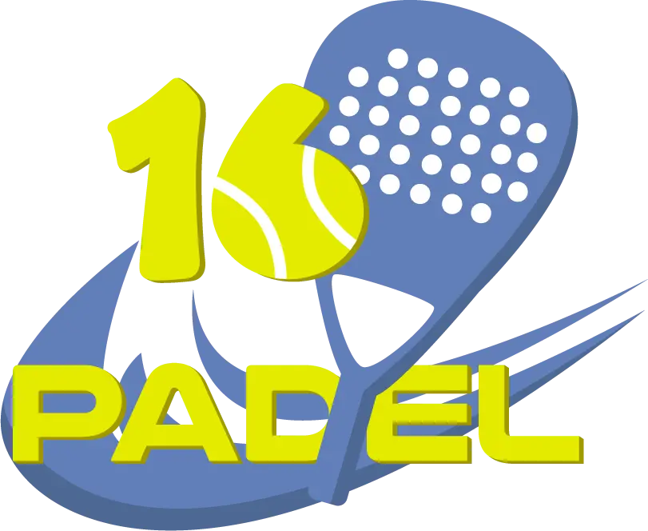
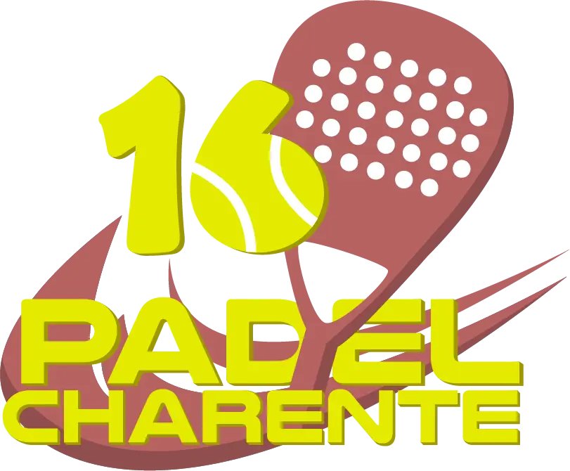
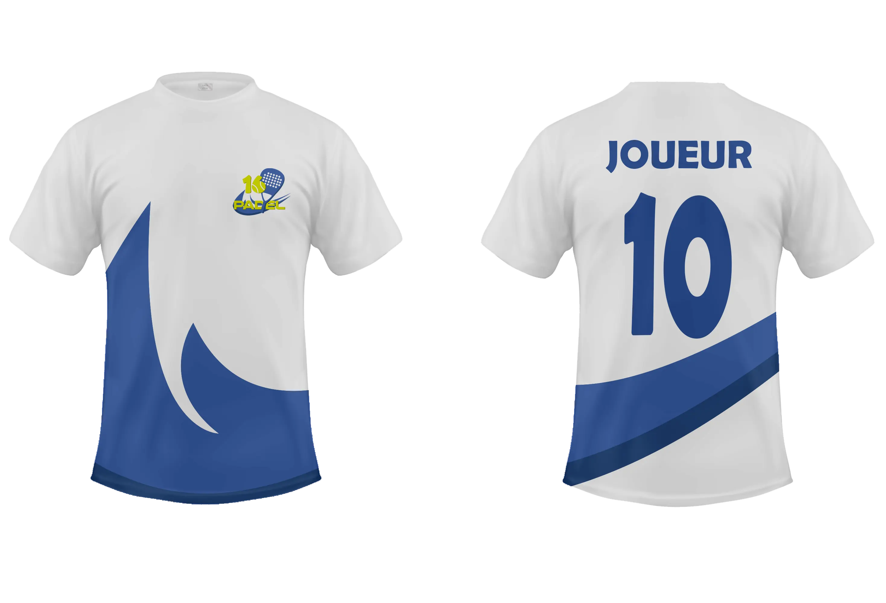
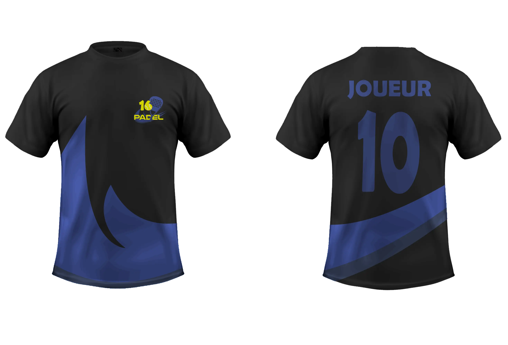
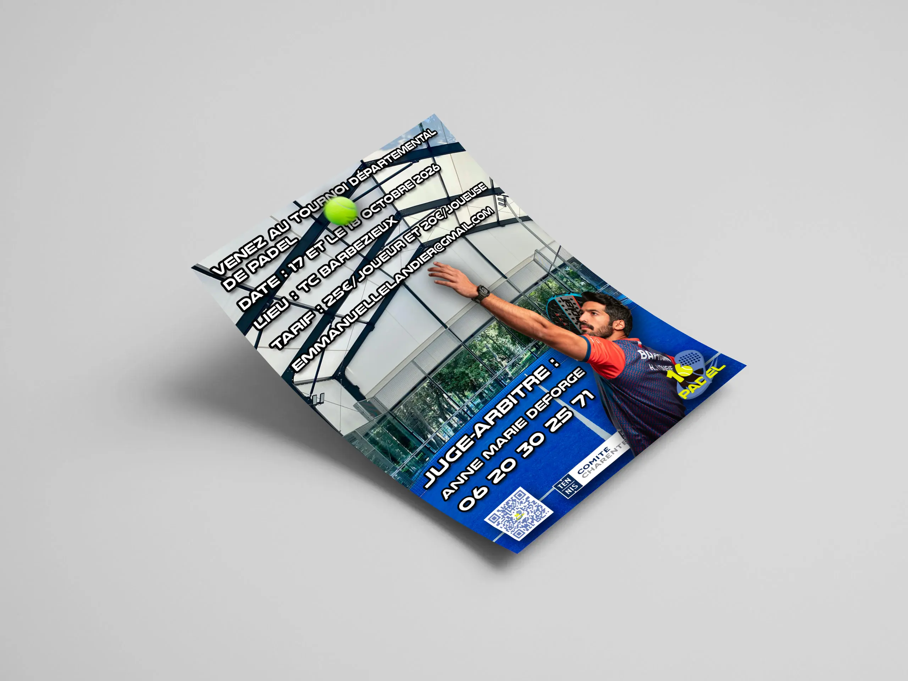
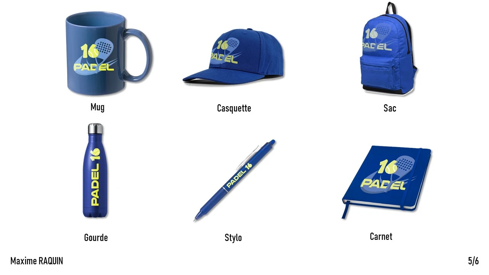
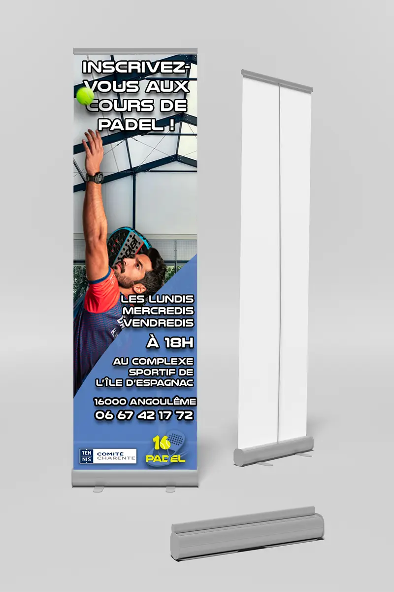

DA Club de padel

Contexte
Pour un projet d'infographie, le professeur nous avait demandé de réaliser la direction artistique d'un vrai club de padel.
Objectif
Quand tout le monde avait fini, le professeur choisissait les 4 meilleurs pour une partie de Padel avec lui. Le meilleur avait la chance de remplacer la direction artistique du club par la sienne. J'ai fini quatrième.
Développement
J'ai choisi comme couleurs le bleu (ce qui me faisait penser au sport) et le jaune (va bien avec le bleu et une couleur que j'apprécie). J'ai ensuite voulu donner du dynamisme au logo avec un symbole qui fait penser au mouvement de la raquette de padel pendant la relance. Enfin, j'ai ajouté le 16 du département de la Charente car le club prend place à Angoulême. Après avoir crée le logo, j'ai adapté la direction artistique que j'avais choisi à tous les produits dérivés (t-shirts, casquettes, sacs...) et affiches.
Images






